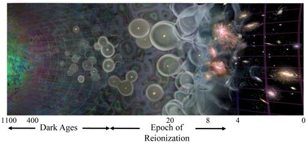
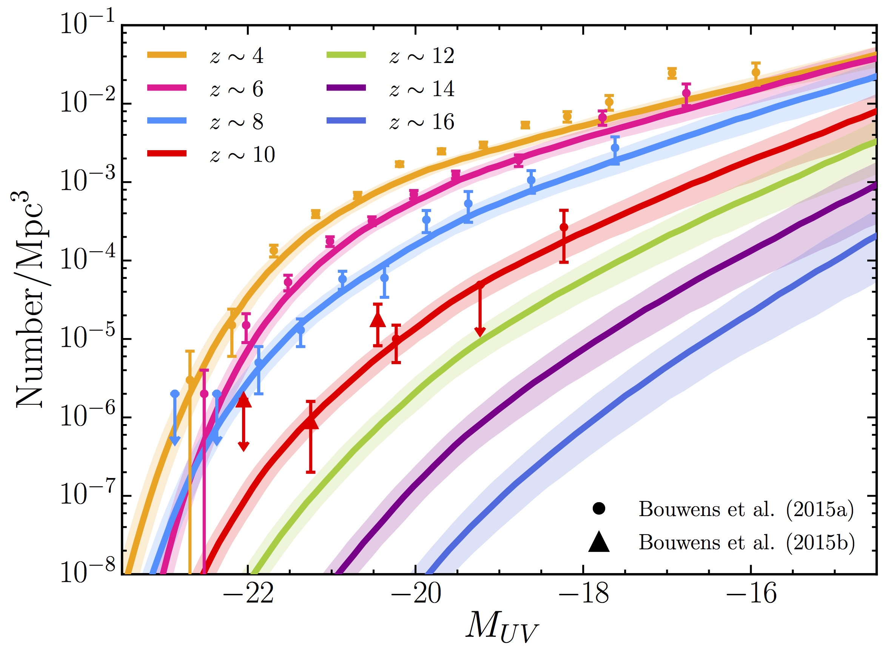
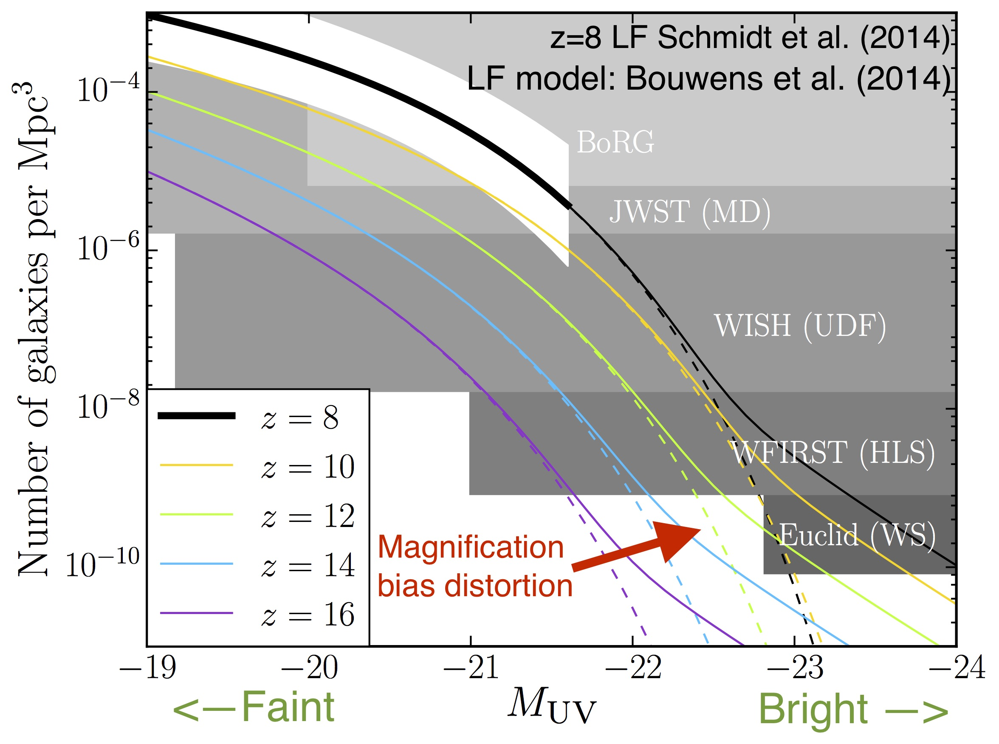
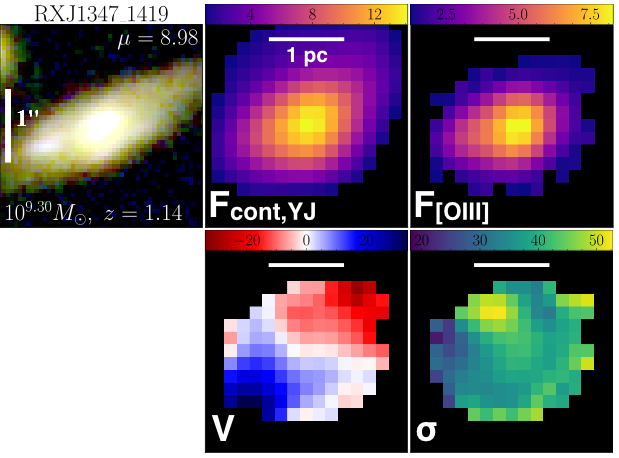

How did the first galaxies form in the universe? What drove the reionization of intergalactic hydrogen?
I study the formation and evolution of galaxies in the early universe, including those formed just a few hundred million years after the Big Bang, and their connections to the dark matter halos they form in, and their relationship to the reionization of intergalactic hydrogen in the universe's first billion years.
My work combines empirical and semi-analytical theoretical modelling with statistical analyses of observations to ask what our frontier observations of galaxies tell us about the early universe. For more details see my publication list on ADS.
I am involved with observations from our largest telescopes in space and on the ground. I am a member of the Brightest of Reionizing Galaxies (BoRG) Survey which searches for bright galaxy candidates at z > 8 in Hubble Space Telescope (HST) imaging, and the Grism Lens-Amplified Survey from Space (GLASS), a HST spectroscopic survey of high-redshift galaxies lensed by clusters. We followed up GLASS targets in the KLASS survey with VLT/KMOS.
The James Webb Space Telescope (JWST) will expand our frontier to the earliest galaxies. I'm excited to be part of the JWST Early Release Science program GLASS which will survey the Frontier Fields galaxy cluster Abell 2744 -- learn more here.
The universe underwent a phase transition from predominantly neutral at recombination (z ∼ 1100), to almost fully ionized by z ∼ 6. We have not identified the sources of ionizing photons – though the most likely candidates are young stars in galaxies. Lyman alpha emission from star-forming galaxies is absorbed by neutral gas, so observations of Lyα in high-z galaxies can constrain the timeline and morpology of reionization. I have developed a new Bayesian framework for directly inferring the neutral hydrogen fraction in the IGM from Lyα observations. I led the design, reduction and analysis of a ESO VLT Large Program with KMOS (PI: A Fontana) to measure the reionization timeline from upper limits of Lyα emission at z > 7.5.

Ensembles of galaxies can be studied by their density distribution with luminosity, the galaxy luminosity function (LF). Observing changes in the LF with redshift allows us to see galaxy evolution in a statistical sense. In Mason, Trenti & Treu (2015) we show that if we assume dark matter halo growth drives the growth of galaxies we can explain the observed LF evolution and other global galaxy properties over 0 < z < 10, without requiring any evolution in feedback mechanisms.

Light travelling from distant objects can be distorted by intervening mass distributions. For galaxies at high redshift the probability of being gravitationally lensed and magnified in this way is increased, which can distort the number of galaxies we detect at a given luminosity. In Mason et al. (2015) we show that this is not a significant effect in current surveys, but that it will dominate future wide field surveys such as Euclid and WFIRST.

Galaxies in the nearby universe tend to be either blue, star forming, disk galaxies, or red, dead, elliptical galaxies. How this bimodality arises and the transformation processes that can cause galaxies to change morphology is still an open question. KLASS (the KMOS Lens-Amplified Spectroscopic Survey) is providing 3D information about galaxies at 'Cosmic Noon' to help understand the evolution of star forming galaxies. By targeting galaxies lensed by massive clusters from GLASS we can resolve galaxies much fainter than ever previously studied. We find a huge diversity in the kinematics of galaxies in this epoch, though they are mostly dynamically hot disks.
